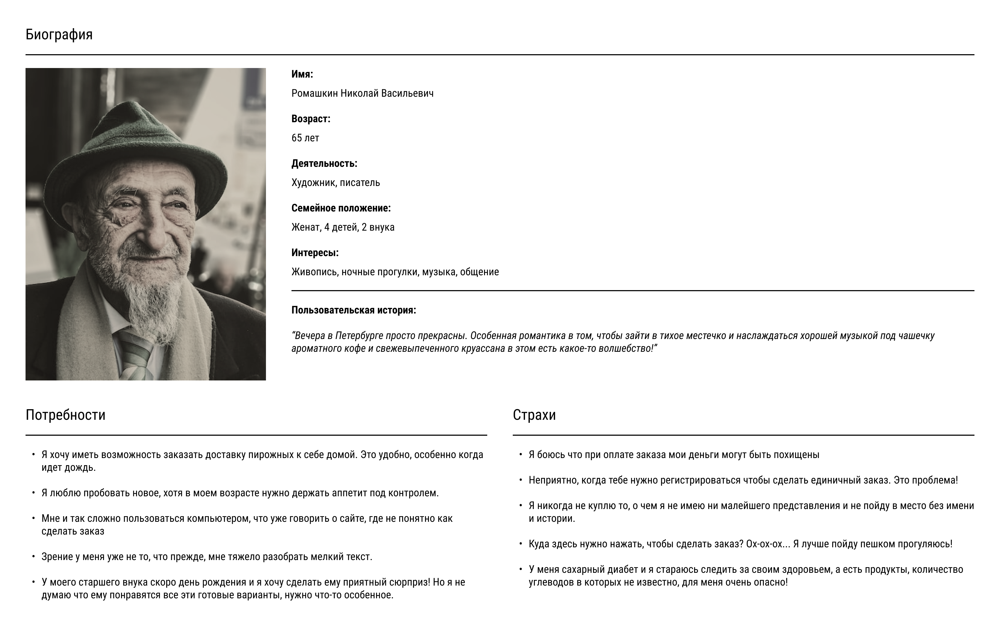
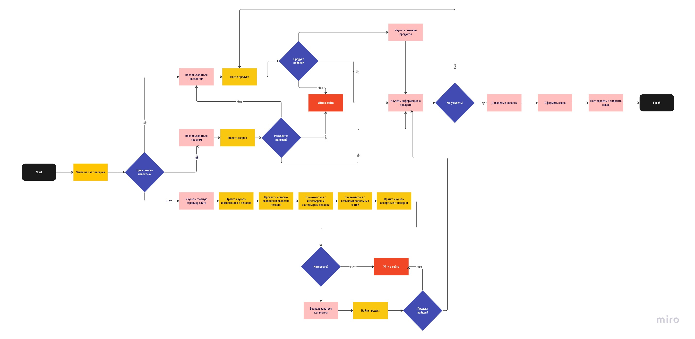
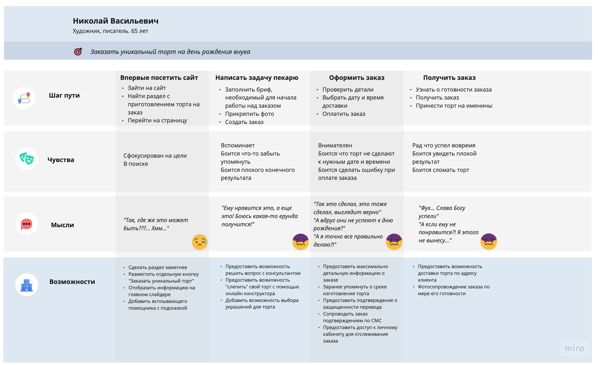
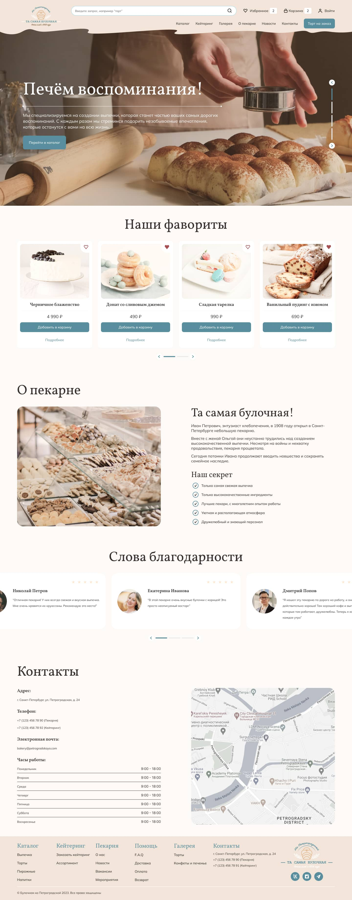
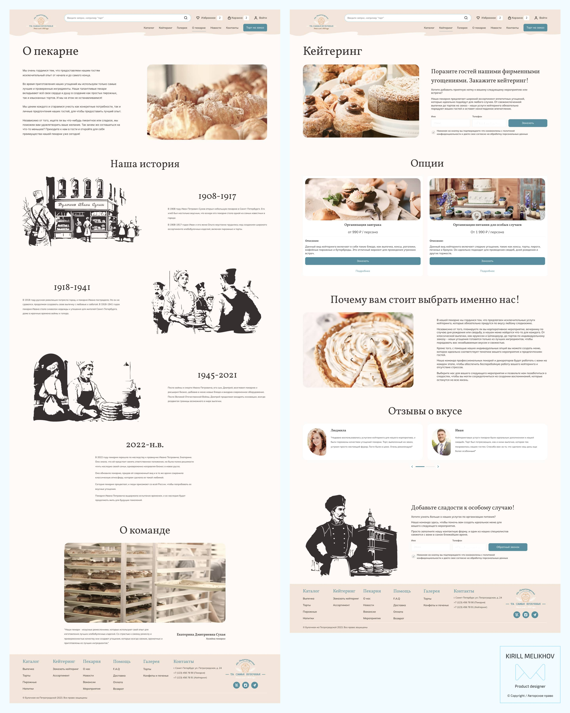
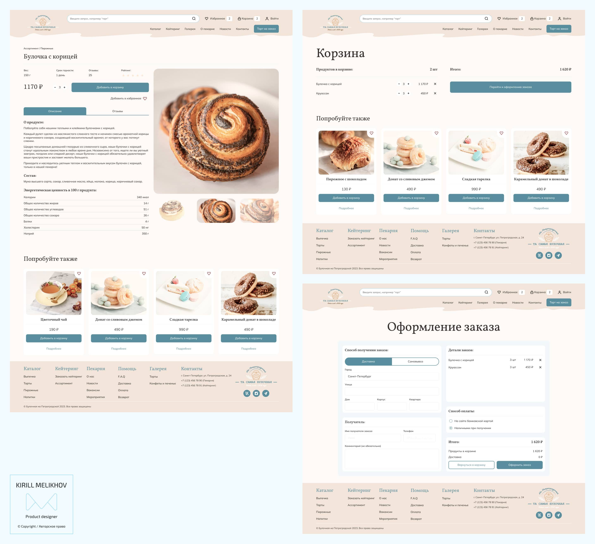

Тематическое исследование
UX исследование
Cвое исследование, я начал с создания образа, используя данные, полученные в ходе опросов пользователей. Этот персонаж послужил репрезентативным архетипом, позволившим мне лучше понять потребности, предпочтения и поведение целевой аудитории.
Этот процесс создания образа позволил получить ценную информацию, подчеркнув важность определенных факторов для пользователей. Исследование показало, что пользователи высоко ценят удобство оформления заказов, не выходя из дома, гарантию безопасности финансовых транзакций в процессе оплаты и доступность подробной информации о пищевой ценности продуктов. Вооружившись этим пониманием, я смог расставить приоритеты и учесть эти ключевые проблемы пользователей в дизайне и функциональности веб-сайта.

Затем я приступил к созданию пользовательского потока, который обеспечивает детальную визуализацию основного пути, который проходит клиент от первоначального посещения веб-сайта до совершения покупки. Кроме того, диаграмма включает альтернативный путь для сценариев, в которых намерение пользователя или цель поиска неизвестны. Эта всеобъемлющая диаграмма позволяет четко понять путь пользователя и помогает обеспечить плавный и интуитивно понятный интерфейс для пользователей, независимо от их конкретных потребностей или целей.

Я также создал карту путешествий клиентов (Customer Journey Map), которая помогла мне понять мотивацию и желания потенциальных пользователей, заранее определить проблемы, с которыми они могут столкнуться, и заблаговременно их решить.

Финальный дизайн
Веб-сайт был оформлен в теплом и привлекательном стиле, который гармонично сочетается с фирменным стилем бренда. Он может похвастаться минималистичной эстетикой, акцентирующей внимание на простоте и элегантности. Структура сайта была продуманно организована таким образом, чтобы обеспечить простоту использования, позволяя пользователям легко ориентироваться и выполнять желаемые задачи.
На главной странице веб-сайта представлены самые популярные продукты пекарни, представлена краткая история заведения и отзывы покупателей. Этот стратегический подход направлен на укрепление доверия и лояльности потенциальных клиентов, подчеркивая репутацию пекарни и положительные отзывы довольных посетителей.

Внутренние разделы, такие как "Обо мне" и "Кейтеринг", содержат ценную информацию о пекарне, ее продукции и спектре предоставляемых услуг. Эти разделы служат информационными ресурсами, позволяющими посетителям узнать больше об истории пекарни, ценностях и фирменных блюдах. Кроме того, они дают представление о различных доступных продуктах и услугах, помогая клиентам принимать обоснованные решения и в дальнейшем взаимодействовать с пекарней.

Пользователю предоставляется исчерпывающая информация о каждом продукте, включающая такую информацию, как состав, пищевая ценность, срок годности и отзывы других покупателей. Такой уровень детализации позволяет пользователям делать осознанный выбор, основываясь на своих предпочтениях, диетических требованиях и опыте предыдущих покупок. Предоставляя такую подробную информацию о продукте, пекарня стремится повысить прозрачность и облегчить своим клиентам уверенный и удовлетворительный процесс покупки.
На странице корзины покупок отображаются товары, которые были добавлены пользователем, предоставляя четкий обзор их выбора. Кроме того, включен раздел с заманчивыми предложениями, побуждающий пользователей рассмотреть возможность добавления дополнительных товаров в свою корзину. Такое стратегическое размещение интересных предложений способствует повышению вовлеченности пользователей и потенциально повышает стоимость их покупки, обеспечивая при этом плавный и удобный процесс оформления заказа.

Чтобы улучшить пользовательский опыт, я упростил процесс оформления заказа, сделав его простым и удобным для пользователей за счет минимизации количества обязательных для заполнения полей. От пользователей требуется только указать или выбрать адрес доставки, данные получателя и выбрать предпочтительный способ оплаты. Такой подход уменьшает трения и обеспечивает плавный и эффективный процесс оформления заказа, что в конечном итоге способствует положительному пользовательскому опыту.